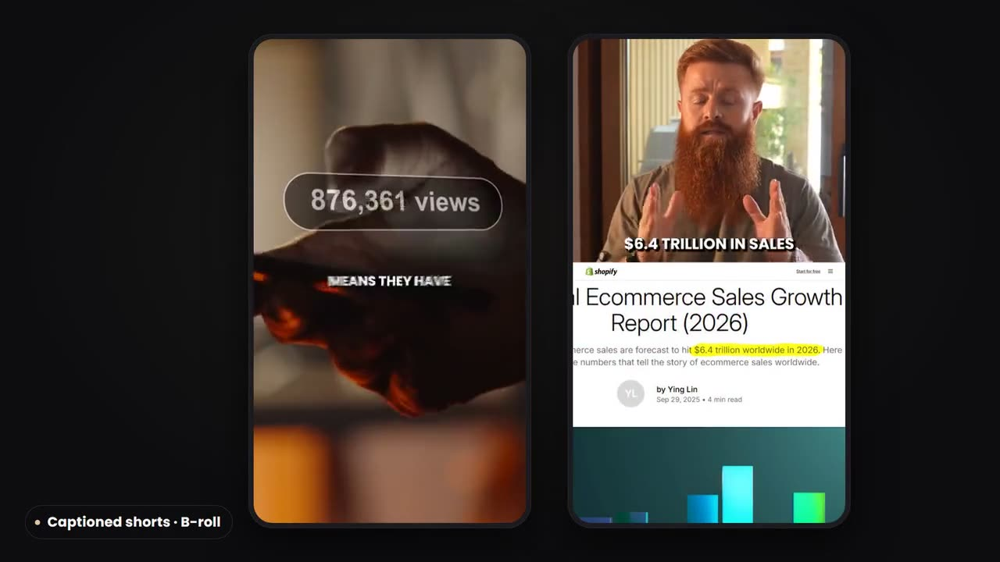

Raw footage in, a video people finish.
I cut the dead air and retakes, keep the pace moving, add captions people can read on mute, and hand back a file that is ready to upload with its thumbnail, title options and chapters.

George CordonEditing showreelFrom raw footage to a tight edit
The best take kept, false starts and pauses gone, something new on screen every few seconds.
George Cordon, ecommerce channel on YouTube, 2026. He films and presents. The whole edit is mine: take selection, pacing, audio, colour, B-roll, graphics and captions.
 George CordonRaw to final: long-form
George CordonRaw to final: long-form
 George CordonRaw to final: two cameras
George CordonRaw to final: two cameras
 George Cordon · YouTubeThis Boring Trick With AI Makes Me 80K/month (opens YouTube in a new tab)
George Cordon · YouTubeThis Boring Trick With AI Makes Me 80K/month (opens YouTube in a new tab)
The YouTube link is a full published episode I edited, 15 minutes.
Captions, and more from what you already have
Word-by-word captions on every Short. Each long video also gives three or more vertical clips, hook first.


Other channel styles
I match the channel, not one house style. Two narrated formats from my own channels.


Ready to upload
Thumbnails that read at phone size, sent with the video.


One video, start to upload
Cut, polish, caption, package.
Cut
Best takes kept, retakes, filler and long pauses removed, a strong hook in the first 30 seconds.
Polish
B-roll, zooms, simple graphics and music where they help. Voice cleaned and levelled.
Caption
Captions checked word by word against the audio, burned in or as an SRT file for YouTube.
Package
Thumbnail, three title options, description and chapter timestamps, ready to paste into YouTube Studio.
Per video
Standard- Video
- 16:9 MP4 at 1080p or 4K, YouTube upload settings
- Upload pack
- Thumbnail, title options, description, chapters, SRT captions
- First cut
- 2 to 3 business days for a 10 to 15 minute video
- Changes
- Back within one business day, notes by timestamp on Frame.io or Drive
- Optional
- Shorts cut from each video
Tools and background
- Editing
- Premiere Pro, DaVinci Resolve
- Graphics
- After Effects, code-built motion graphics (Remotion), Photoshop, Canva
- Audio and captions
- Adobe Podcast, Whisper transcripts, each checked by hand
- Workstation
- Ryzen 9 9900X, RTX 4090, 32 GB RAM
- Clients
- George Cordon (UK business YouTuber), Baytree Cars
Send one video. First cut in three business days.
Contracts and payments go through Upwork.